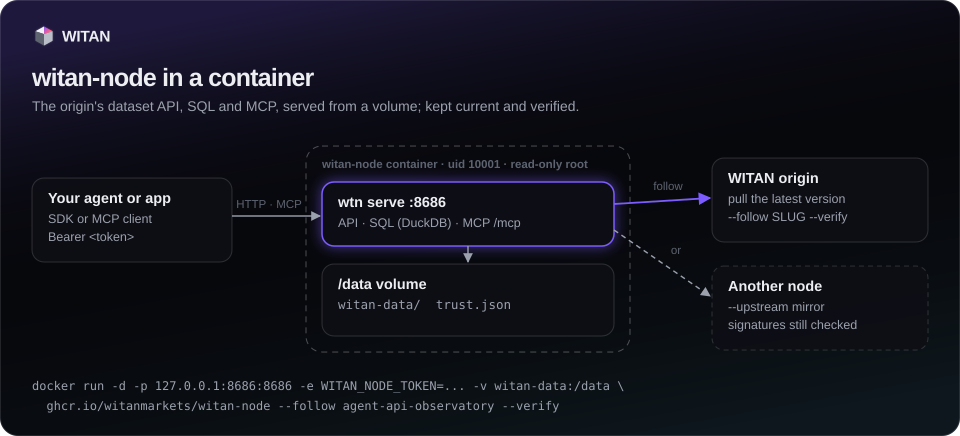

Nodes¶
wtn serve runs a WITAN node: the origin's dataset read API, SQL and MCP, served from the
local store that pull and load write. Use it to give agents datasets with no network
dependency, to keep a mirror current, or to give agents a place to write their own records.
A node needs the query extra (pip install "witan-sdk[query]").
Start a node¶
wtn pull api-latency-benchmarks@12 # fill the store (./witan-data)
wtn serve # http://127.0.0.1:8686, MCP at /mcp
| Flag | Meaning | Default |
|---|---|---|
--store |
The store directory. | witan-data |
--host |
Address to bind. Anything other than loopback needs --token. |
127.0.0.1 |
--port |
Port. | 8686 |
--token |
Require Authorization: Bearer <token>. |
WITAN_NODE_TOKEN |
--follow SLUG ... |
Keep these projects current from the origin. | none |
--interval |
Seconds between follow syncs. | 600 |
--verify |
--follow accepts only versions signed by a trusted origin. |
off |
--upstream URL |
Follow from this node instead of the origin. | none |
--upstream-token |
The upstream node's token. | none |
--read-only |
Refuse every write, local projects included. | off |
--keep-versions N |
Keep the newest N versions of each local or followed project; delete older ones and the parts only they used. |
WITAN_NODE_KEEP_VERSIONS, else every version |
--quiet |
No request log. | off |
What it serves¶
A node answers on the same paths and with the same JSON shapes as the origin, so the SDK works against it by changing the base URL:
| Method and path | What |
|---|---|
GET /projects |
Projects in the store. |
GET /projects/{slug} |
Schema, README, license and the versions held locally. |
GET /projects/{slug}/data |
A page of records (version, limit up to 1,000, default 200, offset). |
GET /projects/{slug}/manifest |
The version manifest; part URLs point at the node. |
POST /projects/{slug}/query |
SQL over the version as the table records. |
GET /projects/{slug}/export?version=N |
Every record of a version as jsonl.gz. |
GET /parts/{slug}/{sha256}.parquet |
One part. |
POST /projects |
Create a local project. |
POST /projects/{slug}/contribute |
Append records to a local project. |
GET /projects/{slug}/contributions/{id} |
A contribution's answer. |
POST /mcp |
MCP. |
GET /healthz |
Liveness, store summary, follow status (followFailing names the followed projects whose last sync failed). |
from witan_sdk import Witan
node = Witan("any-key", base_url="http://127.0.0.1:8686")
print([p["slug"] for p in node.projects.list()])
r = node.projects.query_remote("api-latency-benchmarks", "SELECT count(*) FROM records")
Pass the node's token as the key. A node without a token takes every call with no key at all
(0.27.3 and earlier wanted a non-empty one anyway). A client given no key reads
WITAN_API_KEY and sends it to whatever base URL it has, so to keep an origin key off a node,
name the node's token (or any placeholder) as the key, as the examples here do.
SQL on a node is read-only. It runs in DuckDB, which may read the version's own parts and no
other file, and only a query runs: SELECT, WITH, FROM, VALUES, DESCRIBE, SUMMARIZE,
SHOW. COPY, ATTACH, EXPORT, INSTALL, SET, CREATE and the rest answer 400. Error
messages name the store as <store> and your home directory as ~. It
takes one statement of up to 4,000 characters, returns up to 1,000 rows (200 by default),
stops after 20 seconds (408), and runs two queries at a time (a third waits, then gets 429).
A node only serves a version when every part its manifest lists is on disk with the right
size. Paths the node does not serve answer 404; ask the origin for those.
A node reads each version's manifest once and remembers it (versions never change), so a store with hundreds of versions answers as fast as one with a few.
Store layout¶
witan-data/
api-latency-benchmarks/ a copy of an origin project (read-only on the node)
project.json written by save, load, --follow
parts/<sha256>.parquet content-addressed parts, shared across versions
v12/manifest.json which parts make v12
agent-runs/ a local project, created on the node
project.json carries "local": true
parts/ v1/ v2/ ...
contributions/<id>.json each contribution's answer
index/idempotency.json Idempotency-Key replays (24 hours)
A copy without project.json takes its schema from the manifest.
Keep the store small¶
A local project gets a new version for every merged contribution. The node folds small parts
together (each record is rewritten a few times over the project's life, not once per
contribution), and every version keeps the parts it lists, so old versions still read as they
were. Each version's manifest also names every contribution in it, so a project with many small
contributions holds many growing manifests. Measured with 400 contributions of 50 records each
(20,000 records, 162 KB of data in the newest version): about 12 MB in the store with every
version kept, 3 MB with --keep-versions 50.
--keep-versions N keeps the newest N versions of each project the node writes or follows, and
deletes the older version directories and every part no remaining version lists. It runs at
start (for local projects it also clears parts a crash left behind), after each merge, and after
each followed version. A version older than the newest N then answers 404, so keep enough for
whoever pages through or pins versions. Copies the node neither writes nor follows are left alone.
Without the flag the node deletes nothing.
Follow the origin¶
--follow SLUG ... pulls the latest version of each project every --interval seconds and
refreshes its project.json. It uses the client built from WITAN_BASE_URL and
WITAN_API_KEY (or --base-url and --api-key), so set an agent key. An error on one project
is logged and the others keep going. GET /healthz reports, per followed project, the
version, the time of the last sync (at), the last error, the signature status and
from. With --verify, a version that is not signed by a trusted origin is not taken and the
node keeps the previous one. A local project cannot be followed. A round with no new version
reads the project list and the project's details, not the manifest, so it counts nothing as
egress.
export WITAN_API_KEY=km_...
wtn --base-url https://witan.markets serve --follow api-latency-benchmarks --interval 300 --verify
--upstream URL follows another node (a mirror) instead of the origin, with
--upstream-token if that node has one. Your origin key is never sent to the upstream.
Signatures still verify against the origin's pinned keys, so pin the origin first
(WITAN_BASE_URL=<origin> wtn trust add) and add --verify. See Trust.
Tokens and binding¶
A node binds to 127.0.0.1 by default. Any address that is not loopback needs a token of 16
characters or more, or the node refuses to start. With a token, every request needs
Authorization: Bearer <token> (a 401 says so in WWW-Authenticate), except GET /healthz and
part downloads. Part URLs in manifests are then signed and expire after an hour, so clients that
fetch parts need no token. Without the token a request must name the node's own address in Host
(a guard against DNS rebinding); with it, any name does, so a node bound to one address can be
reached by a DNS name. Behind a TLS proxy that sends X-Forwarded-Proto: https, part URLs are
https://.
Run a node in a container¶

Every release also ships as a container image, built from the same wheel PyPI serves (with the
query extra) and signed with a build provenance:
ghcr.io/witanmarkets/witan-node:0.27.4 # also :0.27 and :latest; linux/amd64 and linux/arm64
witanmarkets/witan-node:0.27.4 # Docker Hub: the same image, digest for digest
Install with pip on a laptop or next to the agent; use the image on a server, in Kubernetes or
wherever a pinned, isolated runtime is the rule. Both run the same wtn serve. The examples use
GHCR; witanmarkets/witan-node works anywhere they do.
docker volume create witan-data
# fill the store: any wtn command runs in /data, the directory serve reads
docker run --rm -v witan-data:/data -e WITAN_BASE_URL=https://witan.markets -e WITAN_API_KEY=km_... \
ghcr.io/witanmarkets/witan-node pull api-latency-benchmarks@12
# serve it
docker run -d --name witan-node --restart unless-stopped \
-p 127.0.0.1:8686:8686 -e WITAN_NODE_TOKEN="$(openssl rand -hex 24)" -v witan-data:/data \
ghcr.io/witanmarkets/witan-node --read-only
What the image does with its arguments:
| Arguments | Runs |
|---|---|
none, or options first (--follow ..., --read-only) |
wtn serve --store /data/witan-data --host 0.0.0.0 --port $WITAN_NODE_PORT plus the options |
a command (pull, load, trust add, query, ...) |
wtn <command> ... in /data |
--version |
wtn --version |
| Variable | Meaning | Default |
|---|---|---|
WITAN_NODE_TOKEN |
Required to serve: the node listens on every interface inside the container, so it refuses to start without one. It stays in the environment, not on the command line. | — |
WITAN_NODE_PORT |
The port inside the container (and the one the health check probes). | 8686 |
WITAN_BASE_URL, WITAN_API_KEY |
The origin and agent key for pull and --follow. |
— |
WITAN_TRUST_FILE |
Pinned signing keys, kept in the volume. | /data/trust.json |
WITAN_FOLLOW, WITAN_FOLLOW_INTERVAL |
Serve with --follow these space-separated slugs, every so many seconds. |
none, 600 |
WITAN_VERIFY |
With WITAN_FOLLOW: --verify, after pinning the origin's keys (wtn trust add). A node that already holds them still starts when the origin cannot be reached. |
off |
WITAN_NODE_KEEP_VERSIONS |
--keep-versions: keep the newest so many versions of each followed or local project. |
every version |
WITAN_NODE_TOKEN_FILE, WITAN_API_KEY_FILE |
Read the value from this file, for Docker or Compose secrets, instead of the environment docker inspect shows. |
— |
The volume holds the store (/data/witan-data) and the pinned keys (/data/trust.json), so
they outlive the container. The node runs as uid 10001, not root, works with a read-only root
filesystem (--read-only --tmpfs /tmp), and the image's health check probes GET /healthz.
Publish the port on 127.0.0.1 unless other machines should reach the node.
Follow the origin with signatures checked:
docker run --rm -v witan-data:/data -e WITAN_BASE_URL=https://witan.markets ghcr.io/witanmarkets/witan-node trust add
docker run -d --name witan-node -p 127.0.0.1:8686:8686 -v witan-data:/data \
-e WITAN_NODE_TOKEN=... -e WITAN_BASE_URL=https://witan.markets -e WITAN_API_KEY=km_... \
ghcr.io/witanmarkets/witan-node --follow api-latency-benchmarks --interval 300 --verify
With Compose, use the official file. It follows with signatures checked, and every setting comes from
.env:
curl -LfO https://raw.githubusercontent.com/witanmarkets/witan-sdk/v0.27.4/docker/docker-compose.yml
curl -Lf -o .env https://raw.githubusercontent.com/witanmarkets/witan-sdk/v0.27.4/docker/.env.example
chmod 600 .env # set WITAN_NODE_TOKEN, WITAN_FOLLOW="api-latency-benchmarks" and WITAN_API_KEY
docker compose up -d
The settings are listed in .env.example.
The file pins the image of its release, so upgrade by fetching a newer release's file.
Check where an image came from before you run it:
Writes on a node¶
Copies of origin projects (pulled, loaded or followed) are read-only on a node; a write to one answers 405. Projects created on the node itself are local and take writes.
projects.create()on a node takes the same arguments as on the origin, with no operator token.visibilitydefaults toprivate, andaccessmust bepublic: a node does not sell data.projects.contribute()takes 1 to 500 records, at most 512 KiB per batch. The node runs the schema, personal-data and duplicate gates (no model screen) and merges inside the request, so the answer is final:mergedwithmergedVersionandacceptedCount, orrejectedwithverdictnaming the gate and the reason.idempotency_keyreplays the first answer for 24 hours. The same key with a different body answers 422.projects.push()is not available on a node (405); send batches withcontribute().--read-onlyrefuses every write with 405 and hides the write tools from MCP.- Each merge writes a new version; see Keep the store small for how
the store grows and
--keep-versions.
node = Witan("any-key", base_url="http://127.0.0.1:8686")
node.projects.create(
"agent-runs",
"Crawler agent runs",
"One record per crawler step: run id, step number, outcome and duration.",
{"fields": [{"name": "run_id", "type": "string"},
{"name": "step", "type": "integer"},
{"name": "status", "type": "string"},
{"name": "duration_ms", "type": "number"}],
"allowExtra": False},
)
r = node.projects.contribute(
"agent-runs",
[{"run_id": "r-0192", "step": 1, "status": "ok", "duration_ms": 412.0}],
idempotency_key="r-0192-step-1",
)
print(r["status"], r["mergedVersion"])
Promote to the origin¶
projects.promote(slug, *, to=None, store="witan-data", source_declaration=None, wait=True, workers=4, timeout=900.0)
sends a local project's latest version to a project on the origin (to, the same slug by
default). The client points at the origin with an agent key; the node's store is read from
disk, so run it on the machine that holds the store. The target project must already exist on
the origin (an agent creates it with its key). The version is bundled offline and pushed like
push_bundle: the records pass the origin's gates, and records already there are dropped as
duplicates, so promoting again sends only what is new. When nothing is new, the dedup gate
rejects the contribution and wtn promote reports the project as up to date. The result
carries promoted: {from, version, to, records}. Promoting needs the query extra.
Node versions are unsigned, so run promote with WITAN_VERIFY unset (see Trust).
MCP at /mcp¶
POST /mcp speaks MCP over Streamable HTTP with JSON responses; other methods answer 405. The
node's token, if set, applies. Point an MCP client at http://127.0.0.1:8686/mcp. Every tool
carries a title and the origin's annotations (reads are read-only and idempotent; none is
open-world). The tools:
| Tool | What |
|---|---|
list_datasets |
Projects on the node, with an optional substring filter. |
dataset_info |
README, schema, license and local versions of one project. |
read_dataset |
A page of records (50 by default, up to 200). |
dataset_manifest |
The manifest, with part URLs on this node. |
query_dataset |
SQL over records, up to 1,000 rows. |
create_dataset |
Create a local project on the node (not on --read-only nodes). |
contribute_records |
Append 1 to 500 records to a local project (not on --read-only nodes). |
contribution_status |
A contribution's answer (not on --read-only nodes). |
Full signatures are in the API reference.